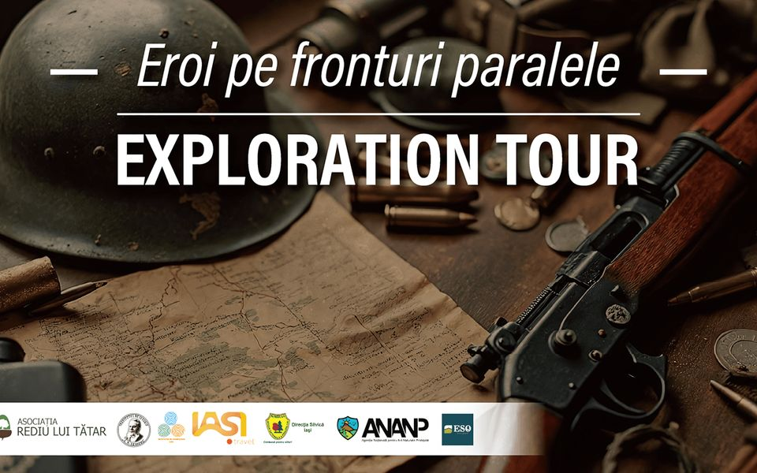

Storytelling · Treasure hunt
The Knights of the Garden
A story-driven treasure hunt that turns the Botanical Garden of Iași into a medieval realm where plants become characters, guardians and guides.
Story-driven routes that turn real places into games, built with Questo.
Storytelling · Treasure hunt
A story-driven treasure hunt that turns the Botanical Garden of Iași into a medieval realm where plants become characters, guardians and guides.

Storytelling · Graphic design
An exploration tour and outdoor information panels along a WWII commemorative route through the Letea Forest and Rediu, built on archival research.